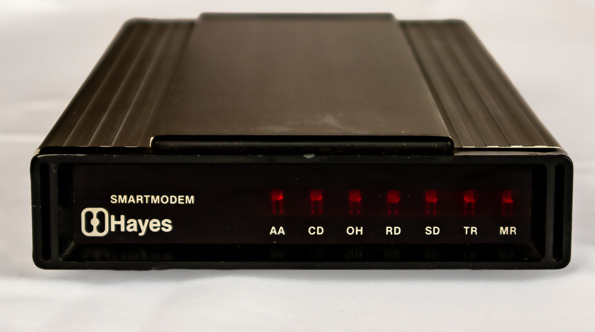
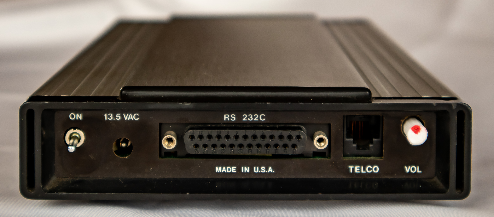
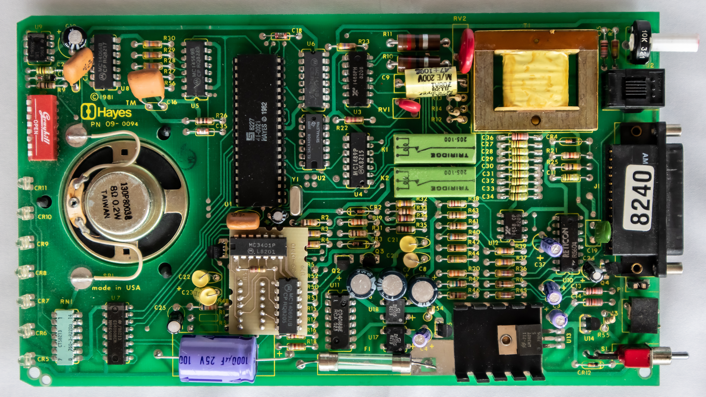

Hayes Smartmodem 300
The modem that taught computers to dial the phone — and created the language every modem still speaks

Overview
The Hayes Smartmodem 300, introduced in April 1981, was the first modem that could be fully controlled by the computer it was connected to, eliminating the need for manual telephone operation. Before the Smartmodem, going online meant manually dialing a phone, listening for the carrier tone, and pressing the handset into rubber acoustic cups. The Smartmodem replaced this entire ritual with a single software command: ATDT. Its AT command set — strings like ATDT5551212 sent from the computer over RS-232 — became the universal language of modem control. The internal speaker let users hear the negotiation tones as audio feedback, and the +++ escape sequence allowed switching between data and command modes without hanging up. Housed in the distinctive extruded aluminum "Hayes Stack" case and priced at $279, it used a Zilog Z8 microcontroller. Within two years, Hayes was selling 140,000 modems annually and the BBS revolution had its standard-bearer.
Deep dive
Dennis Hayes and Dale Heatherington met at National Data Corporation in Atlanta, where they worked on modem technology for credit card authorizations. They founded D.C. Hayes Associates in January 1978 with $5,000, hand-assembling modem boards on Hayes's dining room table. The Smartmodem 300 launched in April 1981 with a Zilog Z8 microcontroller — after Heatherington spent six months struggling with an underpowered PIC microcontroller and switched to the Z8.
Every command began with "AT" followed by command characters. ATDT dialed with touch-tones, ATDP with pulse dialing, ATA answered, ATH hung up. The "AT" prefix also let the modem auto-detect the host computer's serial port speed. The +++ escape sequence — three plus signs with one-second guard-time pauses — switched from data mode back to command mode without disconnecting.
The Smartmodem turned the telephone network into a programmable computer peripheral. The built-in speaker provided critical audio feedback — users could hear dial tone, DTMF digits, remote answer tone, and negotiation handshake — solving the "black box" problem of earlier direct-connect modems. The physical ritual of going online (pick up phone, dial, listen, place in cups) collapsed into a software action.
The Smartmodem made bulletin board systems practical for hobbyists: connect it to your computer, run BBS software, leave a phone line connected overnight. The Smartmodem 1200 followed in 1982 at $699. By the late 1980s, "Hayes-compatible" was mandatory for any PC modem.
Heatherington retired in 1985 at age 37, selling his stake for ~$20 million. Hayes became a multimillionaire and the company grew to a billion-dollar public company before dual bankruptcies in 1994 and 1998. The AT command set remains a living standard — every modem made since 1981 speaks a variant of it.
Team & pioneers
- Dennis C. Hayes Co-founder. Conceived the Smartmodem and AT command set. Left Georgia Tech to work at National Data Corp before starting the company on his dining room table.
- Dale Heatherington Co-founder and lead engineer. Designed the Smartmodem hardware and the +++ escape sequence with guard-time mechanism. Retired in 1985.
Media

